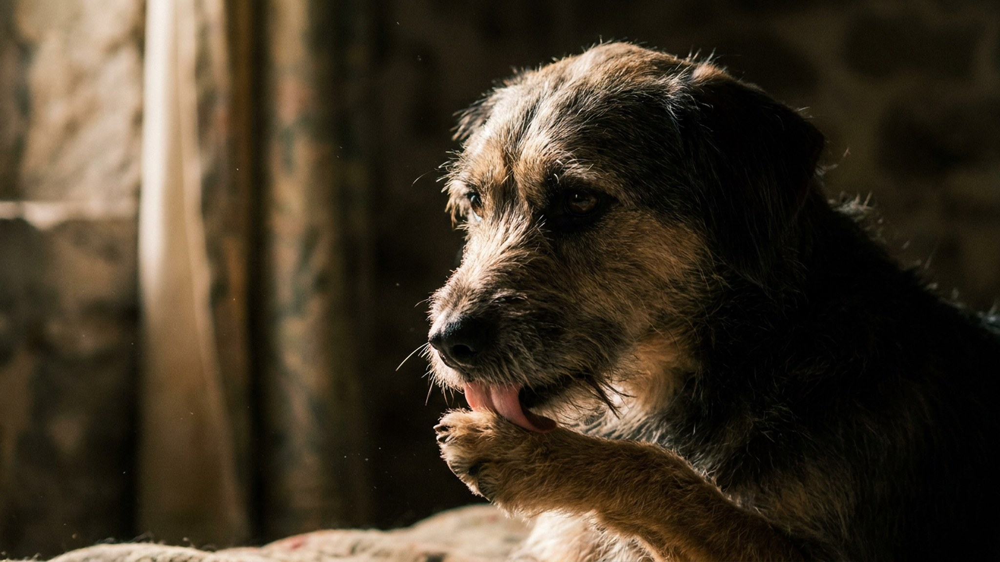

Стоит сесть на диван — и питомец уже лижет руку, локоть, иногда лицо. Принято считать это чистой любовью, но язык животного несёт сразу несколько сообщений: привязанность, вкус кожи, разрядку стресса или закрепившуюся привычку. Ниже — пять причин, почему кошки и собаки вылизывают хозяина, и один случай, когда облизывание стоит обсудить с ветеринаром.
🐾 Экономьте на лишних визитах к врачу
Сначала спросите AI-ветеринара в AnimaLife — часто этого достаточно, чтобы понять, нужен ли визит к врачу.
Вылизывание — врождённый язык заботы. Мать вылизывает детёнышей, кошки и собаки в одной группе ухаживают друг за другом (это называется грумингом). Когда питомец лижет вас, он включает вас в свою «стаю» или «кошачью семью».
У собак это ещё и наследие щенячьего поведения: щенки лижут морду матери, и взрослая собака переносит этот жест приветствия и доверия на хозяина. Чаще всего облизывание — именно про привязанность и расслабление рядом с вами.
Прозаичная, но частая причина. На коже остаются пот, крем, остатки еды, и солоноватый вкус животному просто нравится. После тренировки или в жару, когда кожа солёная, питомец вылизывает активнее — это не обязательно про чувства.
Сюда же — интерес к запаху. Язык помогает «считать» информацию: где вы были, что ели, чем пахнут руки. Для кошки и собаки это способ узнать ваш день.
Повторяющееся облизывание выделяет в мозге животного успокаивающие вещества — это естественный способ снять напряжение, как у человека привычка грызть ручку. Питомец может лизать вас, когда нервничает, скучает или перевозбуждён.
Если не хотите поощрять навязчивость, не ругайте, а спокойно переключайте внимание на игрушку или команду — и хвалите за спокойствие.
В большинстве случаев вылизывание хозяина безобидно. Но иногда оно меняет характер, и тогда это сигнал, а не нежность:
Навязчивое облизывание бывает связано со стрессом, скукой или дискомфортом, и разобраться в причине лучше вместе с ветеринаром. А спокойное «доброе утро» языком по руке — это просто способ вашего питомца сказать, что он вам рад. Понимать разницу между привязанностью и сигналом — и есть забота.
🐾 Всё о вашем питомце — в одном приложении
AI-ветеринар, дневник, напоминания о прививках и уходе. Установите AnimaLife — это бесплатно, в Telegram и MAX.
🐾 Понравился разбор?
Подпишитесь на канал — каждый день разбираем по одному тревожному симптому у кошек и собак: что в пределах нормы, а когда пора к врачу. Подпишитесь, чтобы не пропустить разбор, который может спасти здоровье вашего питомца.
Материал носит информационный характер и не заменяет очную консультацию ветеринара.